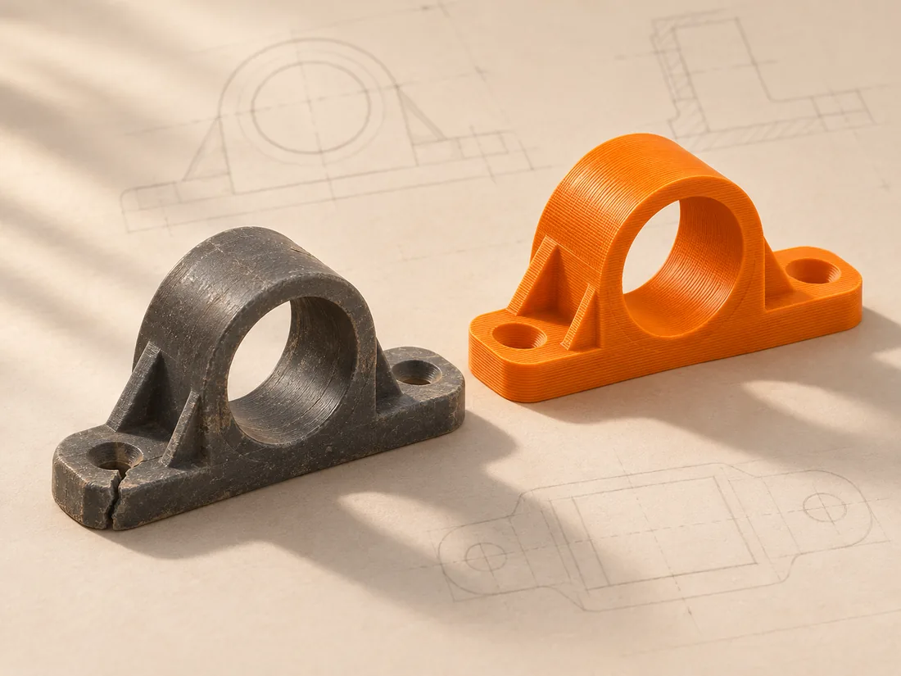
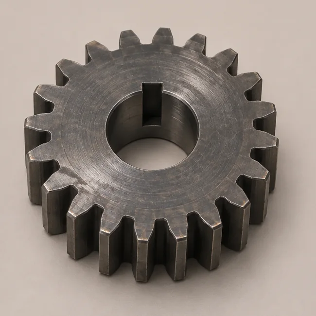
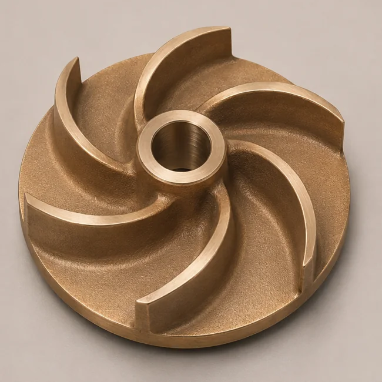
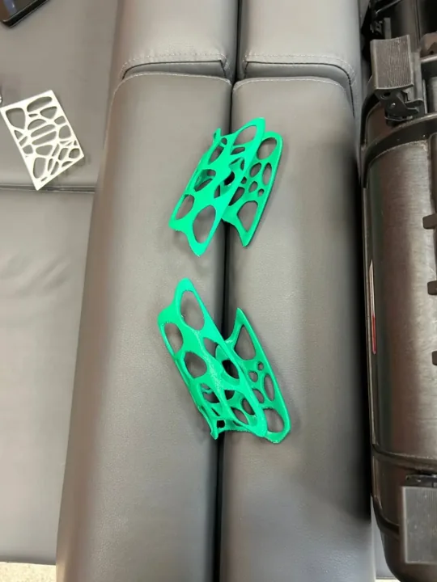
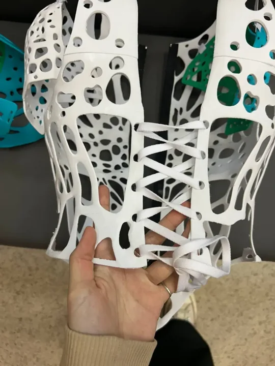
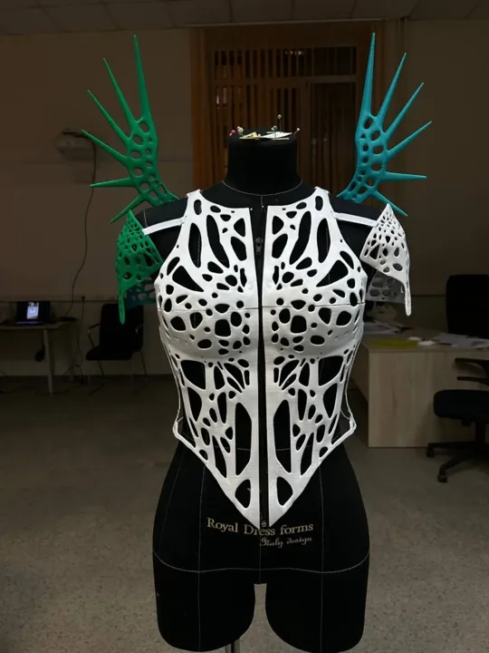

Есть деталь
Отсканируем сохранившуюся часть и обсудим, как восстановить утраченные элементы.
- Для оценки
- Фото с нескольких сторон и хотя бы один размер.
МылКо × STEP 3D
Восстановим геометрию по образцу, построим модель по чертежу или напечатаем деталь из вашего файла.

Отсканируем сохранившуюся часть и обсудим, как восстановить утраченные элементы.
Оценим печать прототипа, технической детали или мастер-модели для снятия формы.
Построим цифровую модель с заданными размерами. При необходимости оценим печать.
Портфолио STEP 3D

Исходником послужила изношенная шестерня. Команда оцифровала образец и восстановила геометрию зубчатого колеса.
Результат Цифровая модель для повторного изготовления.

Когда оригинальную запчасть стало трудно достать, по скану крыльчатки построили параметрическую модель.
Результат Модель STEP, контрольная сетка STL и отчёт об отклонениях.
3D-сканирование и печать
Фигуру оцифровали, по скану спроектировали ажурные модули. Напечатанные детали примерили и соединили в костюм.
Публикация команды ↗


Корпуса для электроники. Для модулей системы мониторинга STEP 3D изготовили малую серию корпусов из ABS. Крепления спроектировали под сборку электронного модуля.
Обсудить свою задачу →Опишите изделие или оборудование. Составим запрос, к которому можно приложить фото, чертёж или список закупки.
+7 (495) 005-83-14Печать — от 1 000 ₽. Итоговую стоимость и срок мастерская уточнит по материалам заявки. Условия печати ↗